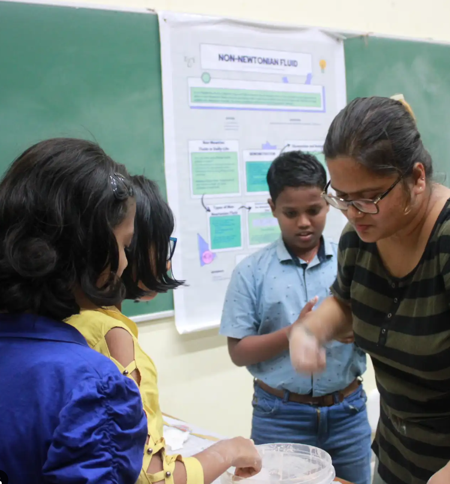
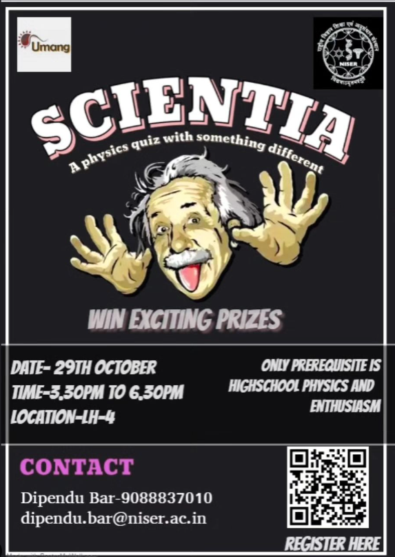

All the events conducted by Vikiran
In Vikiran Club, weekly talks are organized on Fridays. As "vikiran" means rays of sunlight, through these talks, our knowledge and love of physics increase, illuminating our minds just as sunlight brightens the world. Each session features esteemed professors, industry experts, and passionate students who share insights on various physics topics, from classical mechanics to cutting-edge quantum research. These discussions not only deepen our understanding but also foster a sense of community and curiosity among members. Join us every Friday to explore the wonders of physics, engage in thought-provoking discussions, and be part of a vibrant intellectual community. Our talks cover a wide array of subjects, such as the mysteries of black holes, the elegance of theoretical models, and the latest advancements in experimental physics. These sessions provide an excellent platform for networking, idea exchange, and collaborative learning. Whether you're a seasoned physics enthusiast or just beginning your journey, Vikiran Club's weekly talks offer something for everyone. Come, be inspired, challenge your perspectives, and contribute to a collective quest for knowledge and discovery in the fascinating world of physics.
Vikiran, the physics club at National Institute of Science Education and Research, recently hosted an engaging physics exhibition aimed at students and faculty members' children. Held at, the event featured a variety of interactive experiments and theoretical presentations, bringing the wonders of physics to life. The exhibition showcased a range of interactive demonstrations that illustrated fundamental physics principles. Visitors had hands-on experiences with experiments in mechanics, electromagnetism, and quantum physics, sparking curiosity and deeper understanding. Alongside practical displays, attendees were treated to presentations on cutting-edge physics theories, presented in an accessible manner by esteemed professors from the physics department. Their expertise enriched the learning experience, fostering discussions and answering questions from curious minds. The event received enthusiastic feedback, with participants expressing newfound interest and appreciation for physics. It not only entertained but also inspired attendees to explore the subject further, highlighting its relevance and excitement in everyday life. Vikiran's physics exhibition successfully bridged the gap between theory and practice, celebrating scientific curiosity and discovery. By making physics accessible and engaging, the event left a lasting impact on all who attended, promising future innovations and insights into the fascinating world of physics.
The Vikiran Physics Club at National Institute of Science Education and Research (NISER) recently hosted Scientia, an exhilarating quiz competition that drew enthusiastic participants from across the campus. The event featured multiple challenging rounds, including numerical problems, conceptual questions, and practical applications of physics. Students showcased their knowledge and problem-solving skills, creating an atmosphere of excitement and camaraderie.The rounds tested participants' ability to think critically, apply concepts, and perform under pressure. From solving intricate numerical problems to tackling rapid-fire questions and addressing real-world scenarios, the quiz covered a wide range of physics topics. Esteemed professors from the physics department served as judges, adding prestige and sharing valuable insights. Their presence enriched the learning experience for all attendees.The event concluded with a grand ceremony honoring the top teams, who were awarded certificates and prizes for their achievements. Beyond the tangible rewards, Scientia fostered a deeper appreciation for physics, inspiring participants to explore the subject further. It was a memorable celebration of curiosity, knowledge, and the endless possibilities that physics offers, leaving a lasting impact on all who took part.
Vikiran, the dynamic physics club at the National Institute of Science Education and Research (NISER), recently hosted an innovative and entertaining meme-making competition. This event brought together students to blend humor with science, creating a unique platform to express their love for physics through memes.
Winner - Shuvayu Roy
Special Mention - Sujal Sinha
{kind=link}
{kind=link}